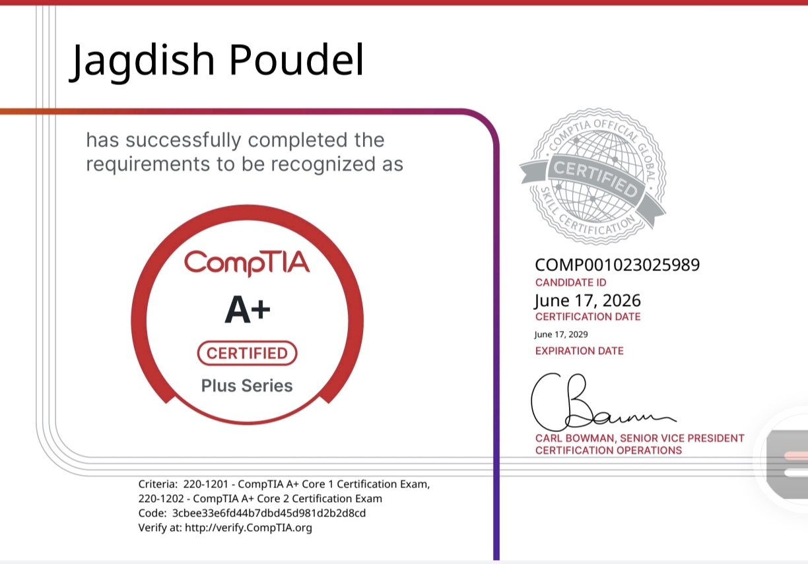

CompTIA A+ Certified
Linux • Windows • Networking • Python • Git • Automation
Building practical infrastructure skills through hands-on labs covering Linux, Windows administration, virtualization, networking, troubleshooting, GitHub workflows, and Python automation while preparing for CCNA.
CompTIA A+ Certified
Linux • Windows
Networking • Automation
Infrastructure & Operations
About Me
I am an aspiring IT support and infrastructure professional with strong interest in troubleshooting, Linux systems, networking, technical operations, and automation.
I have completed the CompTIA A+ certification, which has strengthened my foundation in hardware, operating systems, networking basics, security, troubleshooting, and IT support.
My experience as a CCTV operator has helped me develop discipline, attention to detail, system monitoring habits, and the ability to respond calmly when technical issues happen.
My career direction is focused on Infrastructure, Operations, Networking, IT Support, Linux, and Python automation.
Certifications

Successfully completed CompTIA A+ certification covering:
This certification validates foundational knowledge in technical support, operating systems, networking, cybersecurity fundamentals, and troubleshooting.
Skills
Hardware, software, user support, ticket-style troubleshooting, and system maintenance.
CLI commands, package management, file systems, permissions, and lab environments.
IP addressing, DNS, DHCP, routing basics, subnetting, and packet analysis fundamentals.
File operations, scripts, logs, backup tasks, and future IT automation utilities.
Projects
Configured SMB file sharing between Windows and Android using Termux. Tested authentication, file transfer, share permissions, NTFS permissions, and effective access control.
View ProjectBuilt and documented Linux environments across multiple platforms, including Android, Windows Subsystem for Linux (WSL2), and Oracle VirtualBox. This project focuses on Linux administration, virtualization, troubleshooting, networking, and development workflows.
View ProjectDesigned a responsive portfolio website to document my IT skills, practical labs, learning path, certifications, and infrastructure career direction.
View ProjectPlanned networking labs for building strong Network+ and CCNA-level fundamentals through practical configuration and packet analysis.
View ProjectFuture automation projects focused on practical IT tasks such as file operations, log analysis, backup automation, and network utilities.
View ProjectPlanned home storage lab focused on file sharing, user permissions, remote access, VPN access, backups, and storage management.
View ProjectResume
Download or view my latest resume focused on IT Support, Infrastructure, Networking, and hands-on technical projects.
Contact
I am open to IT support, infrastructure, networking, Linux, and automation-related opportunities.